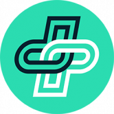
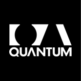
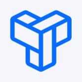
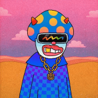
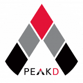
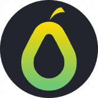
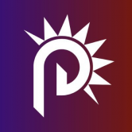

Psychedelics Anonymous Genesis 什么是 Psychedelics Anonymous Genesis迷幻匿名创世纪？ GENESIS PFP NFT 授予最高级别的 PsyCHEDELICS 匿名会员资格。 它包括独家访问： 限量版创世纪商品 限量版 Genesis Metaverse 可穿戴设备 支持服务（绩
 PUML Better Health 什么是 PUML Better Health？ PUML 是一个区块链健康和健身项目，它可以安全地存储和保护健身数据，同时通过我们独特的健康和健身奖励协议奖励用户。通过赞助
 Quantum Curated Quantum 是第一个专注于摄影师及其作品的链上平台，通过策划和删除 NFT 收藏，致力于让艺术家和收藏家都可以轻松访问 NFT 摄影。 Quantum 由 Justin Aversano、Kris
Robot Taekwon V - OFFICIAL Robot Taekwon V是韩国的传奇机器人。 Robot Taekwon V在1976年、1982年、1984年、1990年和2015年发布了五个不同版本。它们看起来不同，具有不同的能
sashimi_lab_next 过去 7 天内没有 sashimi_lab_next 售出。 sashimi_lab_next NFT - 常见问题（FAQ） ▶ 什么是 sashimi_lab_next？ sashimi_lab_next 是一个 NFT（Non-fungible token）
Shamanzs NFT's https://twitter.com/shamanzs 9898名萨满巫师开始了他们前往应许之地的旅程 - Shamaverse。@brosmind创造的独特艺术 // https://discord.gg/shamanzs Shamanzs 是以太坊区块链上以编程方式随机
Space Ape Club Official Space Ape 俱乐部是 10,000 个 Space Ape NFT 的集合——生活在 Cardano 区块链上的独特数字收藏品。您的 Space Ape 充当您兑换 SACT Utility Token 的门票，并仅授予会员访问不和谐中的好处。由 LoveLace CNFT 的万
Sunmiya Club - Universe #2-3 [ Outlaw ] Sunmiya Club 的世界观开始 Sunmiya Club 的IP Miya [Sunmiya Club Official] 跟随声音穿过宇宙门 Sunmiya Club - Universe #0 [ Infinity Door ] 进入太空之旅 Green Sunmiya Club - 为选择宇宙的Miya #0 [无限之门]，Sunmiya
The Alien Scum Fleet ▶ 什么是外星人渣舰队-创世纪？Alien Scum Fleet - Genesis 是一个 NFT（不可替代令牌）集合。存储在区块链上的数字艺术品集合。 ▶ 存在多少 Alien Scum Fleet - Genesis 代币？
The Coffee Junkies Coffee Junkies NFT 在过去 7 天内售出 5 次。The Coffee Junkies 的总销售额为 91.12 美元。The Coffee Junkies NFT 的平均价格为 18.2 美元。有 2,502 名 The Coffee Junkies 所有者，总共拥有 5,779 个代币。 在这个技术让
The Concave Spoons 凹勺统计 创建于 8 个月前，3,585 代币供应，9.5% 费用 过去 7 天没有售出 The Concave Spoons。 凹形勺子是 4317 个随机生成的独特勺子的独家收藏。集合中
THE META BABY KONGZ 💫 你你过 meta kongz 项一一一一一一一一来 变界吗？ K-Pop. 10,000 Beans 的世界是一个多元宇宙，Beans 无处不在。你想和我们一起改变世界吗？💥 韩国领先的天才开发者李斗
Trial and Error NTR Trial and Error NTR NFT 在过去 7 天内售出 8 次。Trial and Error NTR 的总销售额为 3.02 万美元。一个 Trial and Error NTR NFT 的平均价格为 377.3 美元。有 1,743 名 Trial and Error NTR 所有者，总共拥有 2,692 个代
Overlord.World Overlord - 第一个在移动设备上集成 NFT 的 RPG 随着 NFT 风潮的爆发及其对游戏市场的冲击，一系列 NFT 整合的游戏项目应运而生，但大多是简单游戏和网页游戏。没有移动版
Overnight OVN 代币与 USDC 挂钩，即在任何时候都可以用 1 USDC 换 1 OVN 和 1 OVN 换 1 USDC。为了维持挂钩，OVN 以 DeFi 资产全额抵押，可按需转换为 USDC 挂钩机制基于&rsqu
Oxbull Tech OxBull 是由一群才华横溢的前卫科技爱好者开发的启动板和创业孵化器，于 2021 年 2 月推出。OXB 是 OxBull 基础设施的治理令牌。OxBull 的核心不仅仅是一个代币
 Package Portal Package Portal Inc 是一家总部位于美国的公司，致力于通过其用户参与平台向全世界推广加密货币。 我们的无代码服务为商家提供基于区块链的忠诚度和反馈活动的 Web3 集成
Pancake Bunny 与兔子一起获得更多的蛋糕。PancakeBunny 是用于 PancakeSwap 的新型且快速增长的 DeFi 收益聚合器。PancakeBunny 协议使农民能够利用他们寻求
Pandora Digital PANDORA 是基于游戏化 DEX 和 IDO 启动板的下一代去中心化生态系统，为每个人提供整体和身临其境的 Defi 体验，同时使早期加密投资者能够在当今新兴的基于区块链的项目
PandoraSwap Pandora swap 是第三代 Defi 协议，是 ASTAR Network 上交易费用最低（0.17%）的最先进的去中心化交易所。最重要的是，我们率先将协议拥有的流动性 (POL) 引入我们在 ASTAR 网络上的
Pangolin Exchange Pangolin 是在 Avalanche 上运行的去中心化交易所 (DEX)，使用与 Uniswap 相同的自动做市 (AMM) 模型，具有名为 PNG 的本地治理代币，该代币是完全社区分发的，能够交易在以太坊上
ParrotDeFi 什么是 Parrot Defi？ Parrot DeFi 是一个去中心化的收益农业和 NFT 多链平台，在 Matic、IoTeX、Arbitrum 和 Harmony 上运行。 1PEGG（Harmony
Party Degenerates Party Degenerates 是 10,000 个 NFT 的集合，代表了那些选择庆祝生活而不仅仅是生活的人的反叛精神。 他们是职业格格不入的人，心胸宽广，喜欢聚会，并且疯狂到认为自己可以改
 PEACEFUL GROUPIES V2 PEACEFUL GROUPIES 是 10000 个独特角色的集合，这些角色由手工创建并由软件随机化，创造出完美的人机混合艺术品。这些在以太坊区块链中作为 NFT 生活的和平生物，将成为你生
Peak Monsters Steem Monsters交易市场 PKM是Hive-Engine上的实用代币，将作为奖励分发给 PeakMonsters 用户。该代币将允许 PeakMonsters 社区参与 PeakMonsters 的利润并访问其他工具、
 PeakD 我们的故事 PeakD.com 于 2020 年在 HIVE 区块链上作为 SteemPeak.com 的一个版本推出，以集成 Hive 和许多其他区块链为中心。Peak 项目于 2018 年初从 SteemPeak.com 开始。故事是*@asgarth*
PEAKDEFI PEAKDEFI 是一个在以太坊区块链上推出的 DeFi 平台，现在也在币安智能链上推出。在以太坊区块链上，创建 PEAKDEFI 是为了扰乱整个投资环境。尽管当前的解决方案存在很多缺
 PearDAO Peardao (PEX) 旨在通过实现链上、链下和跨链生态系统之间的价值交换来补充 CEX 和 DEX 驱动的加密货币生态系统，就像我们在 eBay 和亚马逊等集中式电子商务市场中看到的那
PeeCoin Charts PeeCoin 应用程序为 BNB 链代币（以前称为币安智能链）提供图表、加密分析和投资组合管理，旨在改善现有 DEX 的加密交易体验。多链在路线图上。 PeeCoin 应用程序帮助投资
 Punk Domain Punk Domains 允许您注册附加到您的帐户地址的域名。 为什么会有人需要它？好吧，你的加密地址很难记住。它以 开头0x，然后以 40 个随机字符（从 to 的数字和从to


 引入我们在 ASTAR 网络上的 DEX。")
，使用与 Uniswap 相同的自动做市 (AMM) 模型，具有名为 PNG 的本地治理代币，该代币是完全社区分发的，能够交易在以太坊上发行的所有代币和雪崩。")